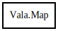

Map
Object Hierarchy:

Description:
public abstract class Map<K,V>
A map is a generic collection of key/value pairs.
Content:
Properties:
Creation methods:
Methods:
- public abstract V @get (K key)
Returns the value of the specified key in this map.
- public abstract void @set (K key, V value)
Inserts a new key and value into this map.
- public abstract void clear ()
Removes all items from this collection. Must not be called on read-
only collections.
- public abstract bool contains (K key)
Determines whether this map contains the specified key.
- public abstract Set<K> get_keys ()
Returns the keys of this map as a read-only set.
- public abstract Collection<V> get_values ()
Returns the values of this map as a read-only collection.
- public abstract MapIterator<K,V> map_iterator ()
Returns a Iterator that can be used for simple iteration over a map.
- public abstract bool remove (K key)
Removes the specified key from this map.